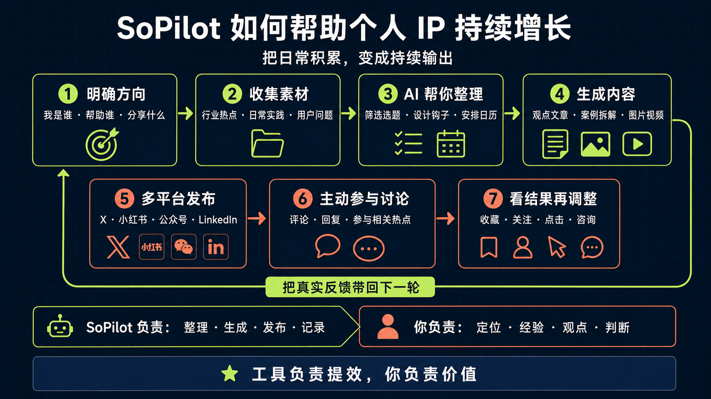

想清楚讲什么
辅助明确账号定位、受众、内容主线和发布节奏。
研究日期 · 2026.09.04
INTERACTIVE PRODUCT RESEARCH · 030
SoPilot 的核心不是“更会写文案”，而是把账号定位、热点信号、持续生产、互动分发和浏览器执行封装成可重复的营销工作流。
00 · PLAIN-LANGUAGE OVERVIEW
不从技术名词出发，而是按照个人创作者每天真实会经历的步骤来理解。

辅助明确账号定位、受众、内容主线和发布节奏。
把热点、实践和用户问题整理成选题、钩子和内容初稿。
适配多个平台，辅助发布，并进入相关话题与评论区。
保留执行记录；真正的效果归因仍需要平台和转化数据。
01 · GROWTH FLYWHEEL
选择一个阶段，查看它如何工作，以及 SoPilot 在其中承担什么角色。
输入产品网址、X 账号或一句营销需求，生成定位、受众、内容主线、关键词和转化路径。它解决的是启号最常见的问题：每天发，但主题漂移。
SOPILOT 动作
增长作用
关键指标主页访问 → 关注转化率
查看对应证据 ↗是，但热点只是加速器。起爆帖监控帮助账号在话题仍在上升时进入评论区，借用既有流量，而不是等待自己的帖子自然分发。
这是基础盘。专栏定位、批量选题和内容日历把灵感型创作改造成稳定供给，帮助平台形成账号标签，也积累用户认知。
有用，但不能代替价值。情绪、结构、首句和话题标签改善“停下来读”的概率；内容是否值得收藏和关注，仍取决于洞察与可信度。
02 · LOGIC ARCHITECTURE
依据官方 Agent 配置和插件文档还原；模型供应商、后端框架和热点评分算法未公开。
INPUT / 上下文
AGENT CORE / 编排
EXECUTOR / 浏览器执行
确定事实
Agent 可通过 CSS 选择器读取指定元素，并把生成结果插入输入框；网站匹配规则决定插件何时展示对应 Agent。
合理推断
产品资料、Agent 配置和内容资产由网站管理；真实页面操作发生在用户已登录的浏览器里，因而可以复用登录态。
尚未闭环
公开资料证明了从策略到发布的闭环，但没有证明曝光、转化和收入数据会自动回流并优化下一轮策略。
03 · WHAT CREATES GROWTH
04 · BOUNDARIES
这些边界会直接影响账号、搜索排名与企业数据安全。
X 的自动化规则反对非 API 的网页脚本自动化，并限制自动点赞、未经用户主动请求的批量回复。高频使用可能导致限流或封禁。
X Automation Rules ↗Google 将自动程序创建的外链、低质量目录链接和带优化锚文本的论坛评论列为链接垃圾。目录提交应以相关性、真实性和人工复核为前提。
Google Spam Policies ↗能够读取和修改网页，才可能自动填表和发布；企业使用前应确认站点访问范围、数据保留、模型供应商和审计机制。
Chrome 权限说明 ↗05 · 14-DAY TEST
用一个非核心账号，以人工审批模式运行两周。
记录过去两周发布量、互动率、主页访问、关注和有效点击。
不要同时测试定位、频率、钩子和渠道，否则无法归因。
每条内容人工校对；只参与与账号定位高度相关的讨论。
优先看主页访问、有效关注、点击和咨询，不只看生成数量或点赞。
先使用策略、内容日历和辅助发布；暂缓全自动点赞、批量评论和批量外链，直到规则与风险评估完成。
SOURCES
产品能力主要依据一手官方资料；增长因果是基于功能链路的分析，不等于独立效果评测。